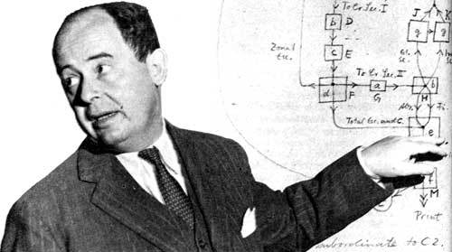
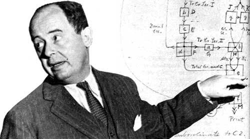
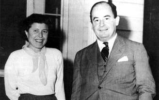
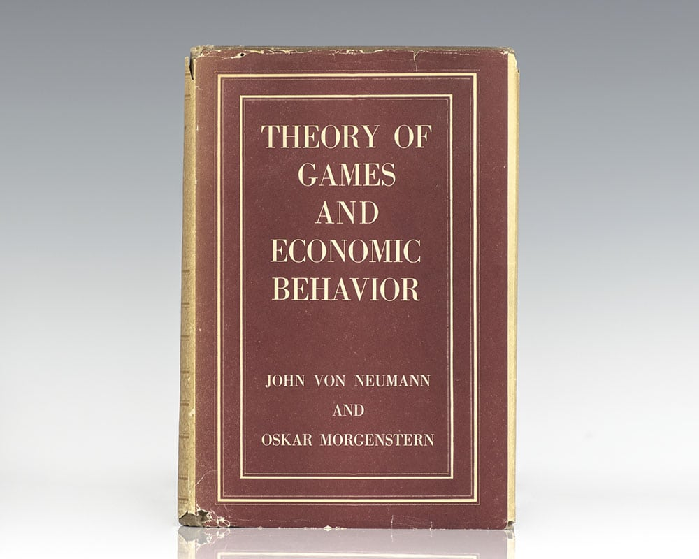
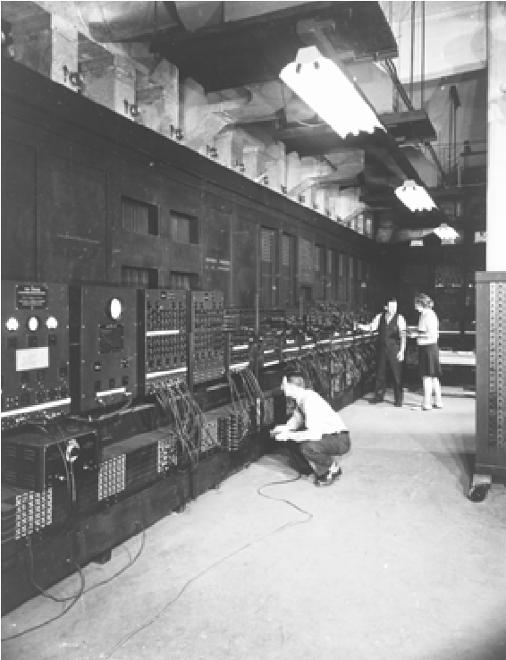
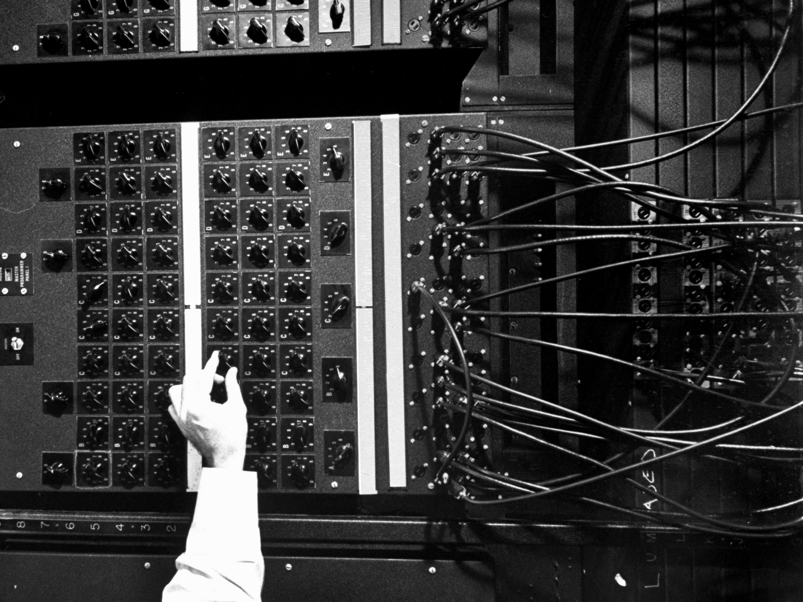

Biography
John von Neumann (December 28, 1903 to February 8, 1957) was a Hungarian pure and applied mathematician, physicist, inventor and polymath. He made major contributions to a number of fields. His contributions to mathematics include the fields of functional analysis, ergodic theory, geometry, topology, and numerical analysis.
 

Early life & Education
John was a child prodigy who showed an aptitude for languages, memorization, and mathematics. By the age of six, he could exchange jokes in Classical Greek, memorize telephone directories, and displayed prodigious mental calculation abilities.
He initially studied chemistry and mathematics at the University of Berlin until 1923 when he went to Zurich, Switzerland where he received a degree in chemical engineering in 1926. The following year he received his doctorate in mathematics from Pázmány Peter University in Budapest at the age of just 22 with a thesis concerning axiomatization of Cantor’s set theory.
Career Path
From 1926 to 1927 von Neumann did postdoctoral studies under David Hilbert at the University of Göttingen. Neumann worked at German universities until 1930, concentrating on quantum mechanics.
John Neumann married twice. He married Mariette Kövesi in 1930, just before emigrating to the United States. They had one daughter. He then divorced her in 1937 and married Klari Dan in 1938.

In 1933 he became a mathematics professor at the Institute for Advanced Study in Princeton, New Jersey and he kept this position until his death.
In 1937, von Neumann became a naturalized citizen of the US after migrating to America with his mother and brothers.
In 1938, von Neumann was awarded the Bôcher Memorial Prize for his work in analysis. During the Second World War he worked on the Manhattan Project to produce the first atomic bomb. Following the war Neumann became a consultant to the American government and industry in addition to his professorship at Princeton.
Contributions and Achievements
In 1932 Von Neumann published his book “The Mathematical Foundations of Quantum Mechanics” which established a strong mathematical framework for quantum physics.
He created the field of cellular automata without the aid of computers, constructing the first self-replicating automata with pencil and graph paper.
His interest in meteorological prediction led him to propose manipulating the environment by spreading colorants on the polar ice caps to enhance absorption of solar radiation, thereby raising global temperatures.
Von Neumann’s principal contribution to the Manhattan Project and the atomic bomb was in the concept and design of the explosive lenses needed to compress the plutonium core of the Trinity test device. Von Neumann’s hydrogen bomb work was also played out in the realm of computing, where he and fellow physicist Stanislaw Ulam developed simulations on von Neumann’s digital computers for the hydrodynamic computations.

He contributed to the development of game theory as a mathematical discipline and together with Stanislaw Ulam devised the Monte Carlo statistical sampling method, which allowed complicated problems to be approximated using random numbers.
Von Neumann’s significant contribution to mathematical economics was the minimax theorem of 1928. This theorem establishes that in certain zero sum games with perfect information, there exists a strategy for each player which allows both players to minimize their maximum losses.
An astoundingly creative mathematician, John von Neumann has played an important role in post-war economic theory. He published “Theory of Games and Economic Behavior” in 1944 which detailed a groundbreaking mathematical theory of economic and social organization, based on a theory of games of strategy.
Throughout his life von Neumann had a respect and admiration for business and government leaders; something which was often at variance with the inclinations of his scientific colleagues.
Achievements in Computer Science
In 1945, mathematician John von Neumann undertook a study of computation that demonstrated that a computer could have a simple, fixed structure, yet be able to execute any kind of computation given properly programmed control without the need for hardware modification. Von Neumann contributed a new understanding of how practical fast computers should be organized and built; these ideas, often referred to as the stored-program technique, became fundamental for future generations of high-speed digital computers and were universally adopted.
The primary advance was the provision of a special type of machine instruction called conditional control transfer--which permitted the program sequence to be interrupted and reinitiated at any point, similar to the system suggested by Babbage for his analytical engine--and by storing all instruction programs together with data in the same memory unit, so that, when desired, instructions could be arithmetically modified in the same way as data. Thus, data was the same as program.
The von Neumann architecture is a design model for a stored-program digital computer that uses a processing unit and a single separate storage structure to hold both instructions and data. It is named after the mathematician and early computer scientist John von Neumann. Such computers implement a universal Turing machine and have a sequential architecture. The terms "von Neumann architecture" and "stored-program computer" are generally used interchangeably.
A stored-program digital computer is one that keeps its programmed instructions, as well as its data, in read-write, random access memory (RAM). Stored-program computers were an advancement over the program-controlled computers of the 1940s, such as the Colossus and the ENIAC, which were programmed by setting switches and inserting patch leads to route data and to control signals between various functional units. In the vast majority of modern computers, the same memory is used for both data and program instructions.
 